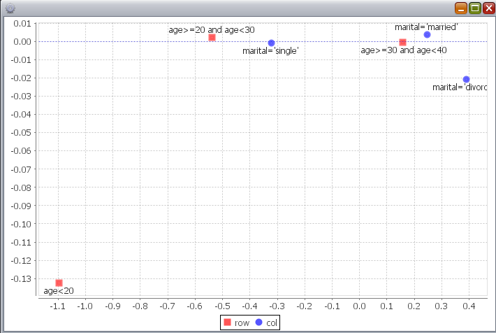
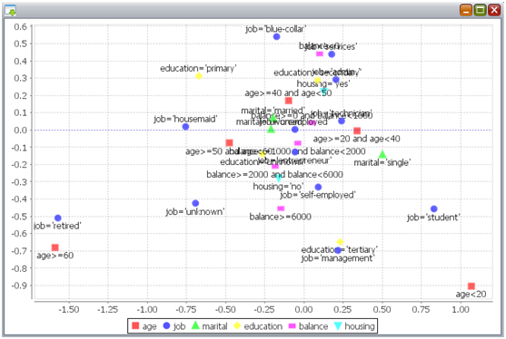
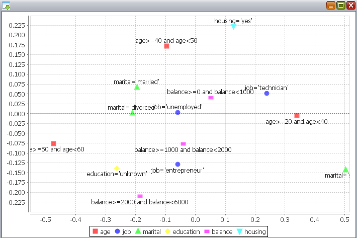
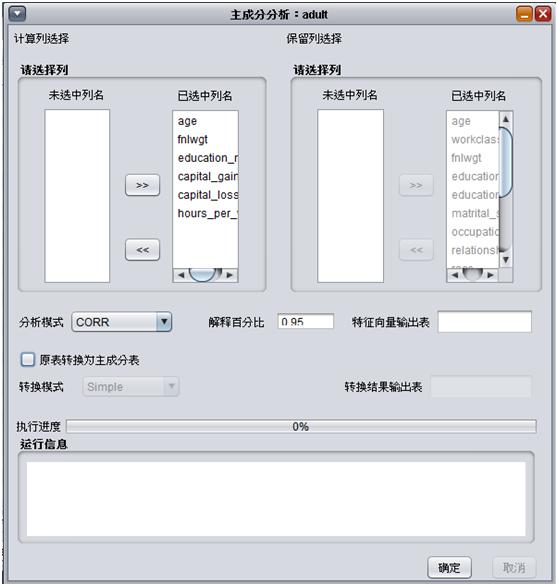
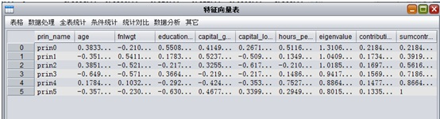
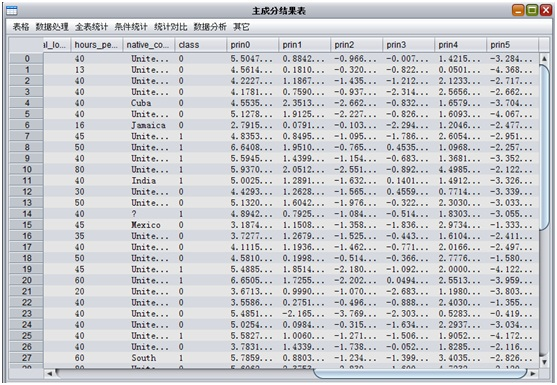

在XLab中，统计分析主要是指对应分析(Correspondence analysis)、多维对应分析(Correspondence analysis)、多重共线性和主成分分析(PCA)，详细介绍见下文。
对应分析(Correspondence analysis), 是一种变量统计分析技术，可以揭示同一变量的各个类别之间的差异，以及两个变量各个类别之间的对应关系。它是一种视觉化的数据分析方法，它能够将两组看不出任何联系的数据，通过定位图展现出来。
进行对应分析的方式主要有两种：函数和界面。
对应分析支持的函数为：corresp。该函数具体使用方法，可用help命令查看，示例：
help(StatAnalysis.corresp)
def corresp(inputTableName, rowLegend, rowTags, rowExprs, colLegend,
colTags, colExprs, inputPartitions = None, srt = None):
参数：
- tableName: 输入表名
- rowLegend: 行说明
- rowTags: 行标签
- rowExprs: 行表达式(可以写列名，代表这一列所有不同的取值)
- colLegend: 列说明
- colTags: 列标签
- colExprs: 列表达式(可以写列名，代表这一列所有不同的取值)
- inputPartitions：(可选)输入表的分区
- srt: (可选)table和selectedDataPartitions下的SummaryResultTable.
返回：
- CorrespondenceAnalysis
示例:
tableName = "bank_marketing";
rowExpr = ["age<20", "age>=20 and age<30", "age>=30 and age<40"]
colExpr = ["marital"]
tableSrt = Statistics.summary(tableName)
ca = StatAnalysis.corresp(tableName, "row", rowExpr, rowExpr,
"col", colExpr, colExpr, srt=tableSrt)
show(ca)
以UCI上Bank Marketing数据集为例，我们考虑观察用户年龄和婚姻状况的关系。其中age字段代表用户的年龄，marital字段代表用户的婚姻状况。由于年龄是连续的，将年龄分成2个区间 age>=20 and age<30, age>=30 and age<40。婚姻状况只有三个状态，只需要输入列名，程序会自动分成三组。示例结果，如下图:
由上图可以看出离婚和结婚和30~40关系比较紧密，单身和20~30关系比较紧密。
多维对应分析(Correspondence analysis), 是一种变量统计分析技术，可以揭示多个变量各个类别之间的对应关系。它是一种视觉化的数据分析方法，它能够将多组看不出任何联系的数据，通过定位图展现出来。
进行多维对应分析的方式主要有两种：函数和界面。
多维对应分析支持的函数为：multicorresp。该函数具体使用方法，可用help命令查看，示例：
help(StatAnalysis.multicorresp)
def multicorresp(inputTableName, legends, tags, tagExprs, inputPartitions = None, srt = None):
参数:
- tableName: 输入表名
- legends: 每个特征说明
- tags: 标签
- tagExprs: 表达式(可以写列名，代表这一列所有不同的取值)
- inputPartitions：(可选)输入表的分区
- srt: (可选)table和inputPartitions下的SummaryResultTable.
返回：
MultiCorrespondenceAnalysis.
可以看出多维对应分析，如果维数是二，那么就是对应分析。
示例：
tableName = "bank_data"
ageExpr = ["age<20", "age>=20 and age<40", "age>=40 and age<50", "age>=50 and age<60", "age>=60"]
jobExpr = ["job"]
maritalExpr= ["marital"]
educationExpr = ["education"]
balanceExpr = ["balance<0", "balance>=0 and balance<1000",
"balance>=1000 and balance<2000", "balance>=2000 and balance<6000", "balance>=6000"]
housingExpr = ["housing"]
tagExprs = [ageExpr, jobExpr, maritalExpr, educationExpr, balanceExpr, housingExpr]
legends = ["age", "job", "marital", "education", "balance", "housing"]
mca = multicorresp(tableName, legends, tagExprs, tagExprs)
show(mca)
以UCI上Bank Marketing数据集为例，我们考虑观察用户年龄，婚姻状况，教育程度，工作状况，净收入，是否有房贷之间的关系。其中age字段代表用户的年龄，marital字段代表用户的婚姻状况。由于年龄和净收入是连续的，将年龄分成6个区间, 将净收入分成5个区间。婚姻状况，工作状况，教育程度，是否有房贷等变量只有几个状态，只需要输入列名，程序会自动分组。结果，如下图：
从上图可以看出，小于20岁的人群和学生比较相关，大于60的人群和退休比较相关，受过高等教育的和管理者比较相关。放大中间区域，如下图：
从上图可以看出，技术人员和20到40之间关系比较近，40到50的人群和有房贷人群关系较近。
所谓多重共线性(Multicollinearity)是指线性回归模型中的解释变量之间由于存在精确相关关系或高度相关关系而使模型估计失真或难以估计准确。一般来说，由于经济数据的限制使得模型设计不当，导致设计矩阵中解释变量间存在普遍的相关关系。 完全共线性的情况并不多见，一般出现的是在一定程度上的共线性，即近似共线性。
多维对应分析支持的函数为：collinear，共三种用法：
函数具体使用方法，可用help命令查看，示例：
help(StatAnalysis.collinear)
def collinear(tableName = None, colNames = None, srt = None, partitions = None):
参数：
- tableName: (可选)输入表名
- colNames: (可选)列名列表
- partitions：(可选)输入表的分区
- srt: (可选)table和inputPartitions下的SummaryResultTable.
返回:
- Multicollinearity
Note
我们需要关注如下共线性的指标： 第一，矩阵X^T X的条件数κ，为矩阵X^T X的最大特征值与最小特征值的比值。 用κ判断多重共线性的准则： 1. 0≤κ<100时，认为多重共线性的程度很小 2. 100≤κ≤1000时，认为存在中等程度或较强程度的多重共线性 3. κ>1000时，认为存在严重的多重共线性 第二，条件指数与方差比例 在实际使用中，若条件指数值在10与30间为弱相关,在30与100间为中等相关,大于100为强相关;在大的条件指数中由方差比例超过0.5的自变量构成的变量子集就认为是相关变量集。 第三，方差膨胀因子与容忍度 方差膨胀因子(Variance Inflation Factor，缩写为VIF)。对于全部自变量X_1,X_2,...,X_m，自变量X_i的方差膨胀因子记为 VIF_i，计算表示如下： VIF_i=1/(1-R_i^2 ) 其中，R_i^2是以X_i为因变量时对其它自变量建立多元线性回归模型的多重判定系数。因为多重判定系数R_i^2的取值区间为[0,1]，所以VIF_i的取值区间为[1,+∞)。VIF_i越接近1，多重共线性越弱；值越远大于1，多重共线性越强。一般地，当VIF_i<10时，不存在多重共线性；当10≤VIF_i<100时，存在较强的多重共线性；当VIF_i>100时，存在严重多重共线性 容忍度(Tolerance)为方差膨胀因子(VIF)的倒数。取值范围为[0,1]，容忍度越接近0，表示多重共线性越强；越接近于1，多重共线性越弱。
示例：
corr = StatAnalysis.collinear("iris", colNames=["sepal_length", "sepal_width", \
"petal_length", "petal_width"])
print mcorr
运行结果：
Coefficient of Correlation:
Variable sepal_length sepal_width petal_length petal_width
sepal_length 1.0 -0.10936924995067454 0.8717541573048854 0.8179536333691777
sepal_width -0.10936924995067454 1.0 -0.4205160964011882 -0.35654408961382245
petal_length 0.8717541573048854 -0.4205160964011882 1.0 0.9627570970509656
petal_width 0.8179536333691777 -0.35654408961382245 0.9627570970509656 1.0
kappa = 141.249002155887
max lambda = 2.9108180837520914
min lambda = 0.020607707235620804
Min EigenVector:
0.2619955869000212 * sepal_length + -0.12413481006270811 * sepal_width + -0.8011542690799339 * petal_length + 0.5235462716041492 * petal_width
Number Eigenvalue Condition Index
1 2.9108180837520914 1.0
2 0.9212209307072055 1.777565586411462
3 0.14735327830508105 4.444548308278417
4 0.020607707235620804 11.88482234431323
Variance Proportions
Number sepal_length sepal_width petal_length petal_width
1 0.013197611312765672 0.01135134601935918 0.003696789023319418 0.006808870825877148
2 0.021184409657575256 0.4430182707196299 1.538487198030385E-5 2.877766119470164E-4
3 0.4966863511841683 0.18939499339389723 0.004290641925703285 0.1688888502881787
4 0.4689316278454907 0.35623538986711384 0.991997184178997 0.8240145022739972
VIF and TOL:
sepal_length VIF:7.103113442835096 TOL:0.14078333508930496
sepal_width VIF:2.0990386257425726 TOL:0.476408574733222
petal_length VIF:31.39729165072643 TOL:0.03184988091088625
petal_width VIF:16.141563956998493 TOL:0.06195186554809829
由上述结果指标，kappa=141.249002155887，说明存在相关性，第4个条件指数为11.88482234431323，也证明为相关，根据第4行的方差比例知，第3列和第4列相关；第3个和第4个VIF值都超过了10，也证明存在共线性。
主成分分析(Principal Component Analysis，PCA)， 是指将多个变量通过线性变换以选出较少个数重要变量的一种多元统计分析方法。又称主分量分析。
在用统计分析方法研究多变量的课题时，变量个数太多就会增加课题的复杂性。人们自然希望变量个数较少而得到的信息较多。在很多情形，变量之间是有一定的相关关系的，当两个变量之间有一定相关关系时，可以解释为这两个变量反映此课题的信息有一定的重叠。主成分分析是对于原先提出的所有变量，建立尽可能少的新变量，使得这些新变量是两两不相关的，而且这些新变量在反映课题的信息方面尽可能保持原有的信息。 主成分分析，详细介绍见：Principal component analysis 。
进行主成分分析的方式主要有两种：函数和界面。
主成分分析支持的函数为：calc。该函数具体使用方法，可用help命令查看，示例：
help(StatAnalysis.PrinCompAnalysis.calc)
def calc(inputTableName, columnNames, eigOutputTableName,
contriRate=0.9, calcuType="CORR", needTransform=False,
princompOutputTableName=None, transType="Simple",
remainColumns=None, srt=None):
参数：
- inputTableName: 进行主成分分析的输入表
- columnNames: 参与主成分分析运算的数值列
- eigOutputTableName: 特征向量与特征值的输出表
- contriRate:(可选) 解释百分比,又称累计贡献率, 决定最终选择主成分的数目，默认值0.9
- calcuType: (可选)对原表进行特征分解的方式,可以选择”CORR”,”COVAR_SAMP”或”COVAR_POP”中的一种，默认值”CORR”
- needTransform: (可选)是否进行主成分转换，默认值False
- princompOutputTableName: (可选)进行主成分转换后的最终结果输出表
- transType: (可选)原表转换为主成分表的方式,包括”Simple”,”Sub-Mean”,”Normalization”,即输入表直接乘以转移矩阵,输入表每列减去本列均值再乘以转移矩阵,输入表每列减去本列均值后乘以转移矩阵再除以主成分列的标准差,默认值”Simple”
- remainColumns: (可选)只在进行主成分转换时生效,这些列都会出现在最终主成分结果表中
- srt: (可选)输入表的SummaryResult
示例:
StatAnalysis.PrinCompAnalysis.calc("adult", ["age", "hours_per_week"], "pcaeigouttable1");
srt=Statistics.summary("adult")
StatAnalysis.PrinCompAnalysis.calc("adult", ["age","hours_per_week"],
"pcaeigouttable2", contriRate = 0.9, calcuType = "CORR", needTransform = True,
princompOutputTableName = "pcatransresul1t", transType = "Simple",
remainColumns =["age"], srt = srt);
选择数据表,点击数据统计→主成分分析，如下图：
界面说明：
运行结果：主成分分析的运行结果包括两部分：转移矩阵和转换出的主成分表，只有”原表转换为主成分表”被勾选时，才会进行原表到主成分表的转换。结果如下图：
 